Evolución del depredador
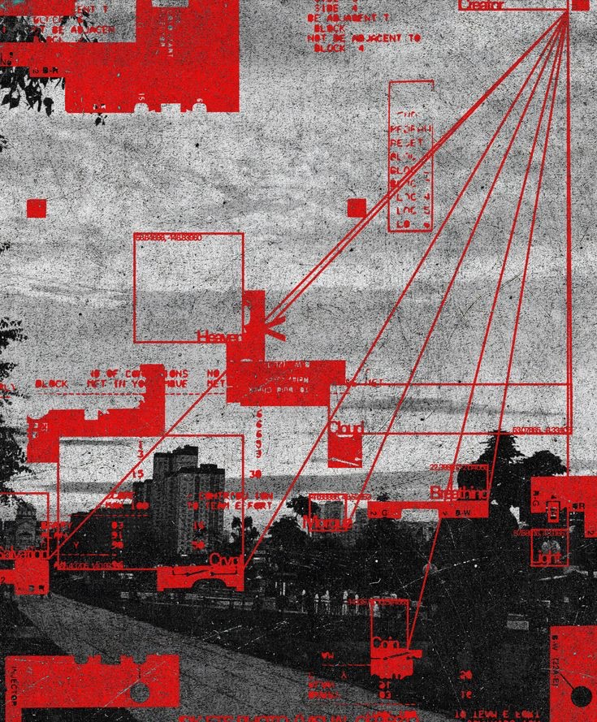

CONFIDENCIAL
FECHA INFORME: 1974

CONFIDENCIAL
FECHA INFORME: 1975

CONFIDENCIAL
FECHA INFORME: 1977

CONFIDENCIAL
FECHA INFORME: ene 1978

CONFIDENCIAL
FECHA INFORME: feb 1978

CONFIDENCIAL
FECHA INFORME: feb 1978

CONFIDENCIAL
FECHA INFORME: ene 1989


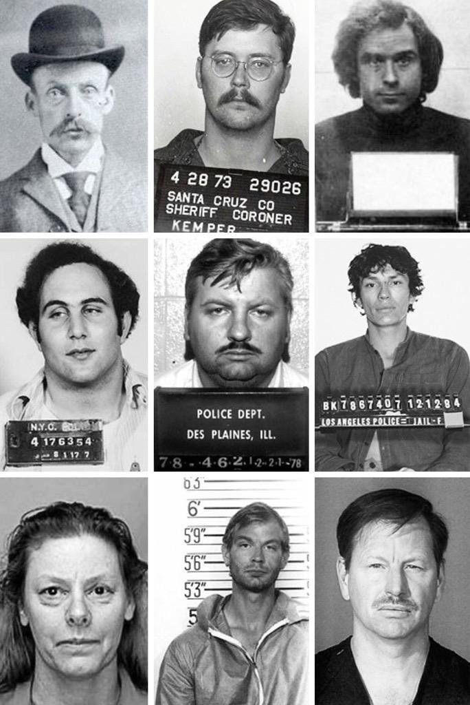
Por qué la
llamamos
"edad de oro"
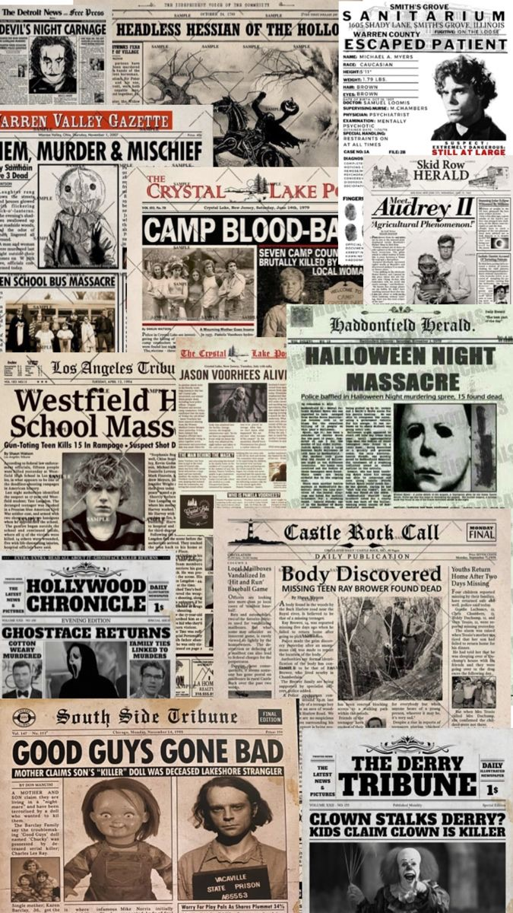
La fábrica
cultural del
asesino en serie

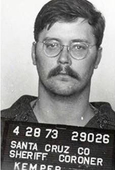
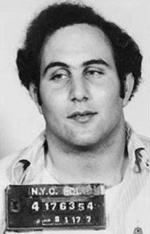
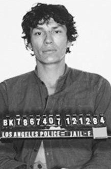
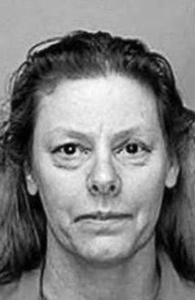
Mientras la cultura hacía mito, alguien intentaba hacer método


Un caso de los 90
Jeffrey Dahmer mató a diecisiete hombres y adolescentes en Milwaukee entre 1978 y 1991. Fue detenido en julio de ese año.
En mayo de 1991, un adolescente de catorce años logró escapar. La policía lo devolvió a Dahmer tras aceptar su explicación como una disputa privada.
El juicio de 1992 convirtió el caso en espectáculo televisado. Tres décadas después, Netflix lo reactivó como contenido masivo, pese a las críticas de familias de víctimas.

Sí. Pero aún no lo llamábamos así.

.jpeg)
.jpeg)
_.jpeg)
El miedo también tenía archivo.
Nadie supo quién fue. Todos aprendieron su nombre.
Jack el Destripador no fue solo un caso criminal. Fue una marca nacida entre callejones, periódicos, cartas dudosas y una identidad que nunca apareció.
Entre agosto y noviembre de 1888, cinco mujeres fueron brutalmente asesinadas y descuartizadas en Whitechapel. Hubo víctimas, investigación y pistas que la policía no pudo cerrar. Pero el nombre que sobrevivió no fue el de un hombre identificado: fue una firma construida por la prensa sensacionalista, cartas anónimas dudosas y un vacío tan grande que la cultura lo llenó de miedo.

El hombre lobo llegó a juicio.
Las desapariciones, los rumores sobre grasa humana y la defensa basada en una supuesta transformación en lobo hicieron que el caso entrara en la memoria popular como sacamantecas y como licántropo. Aquí la leyenda no sustituye al expediente: se pega a él, lo deforma y lo vuelve más recordable que la sentencia.


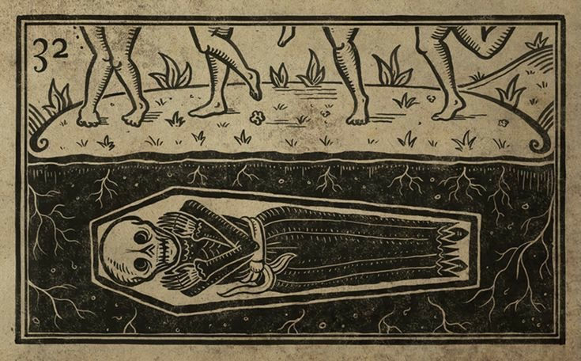
La condesa que el rumor volvió vampiro.
El caso histórico está atravesado por disputas políticas, testimonios, cifras discutidas y relatos posteriores. La leyenda eligió una imagen simple y duradera: una aristócrata que se bañaba en sangre para conservar la juventud.


Cuando la ciencia no tenía respuestas, el miedo completaba la historia.
Antes de los perfiles criminales, las bases de datos y las pruebas forenses, el relato colectivo daba forma a lo que todavía no podía explicar.
Los hechos no desaparecían: se mezclaban con cartas, confesiones, rumores y leyendas. El boca a boca fijaba una imagen sencilla y memorable allí donde la realidad seguía siendo incierta.
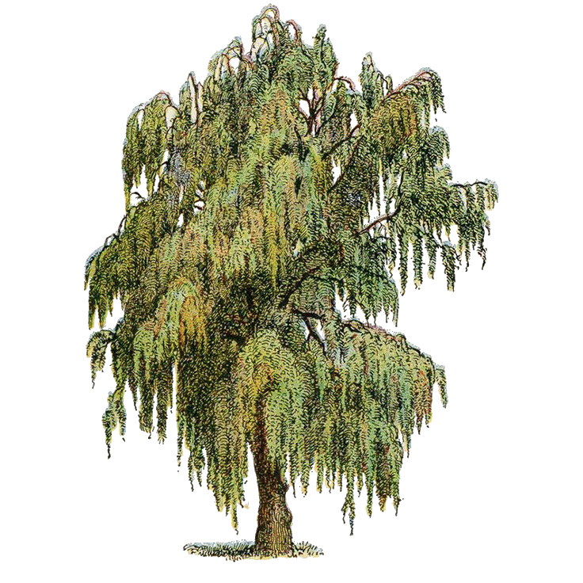
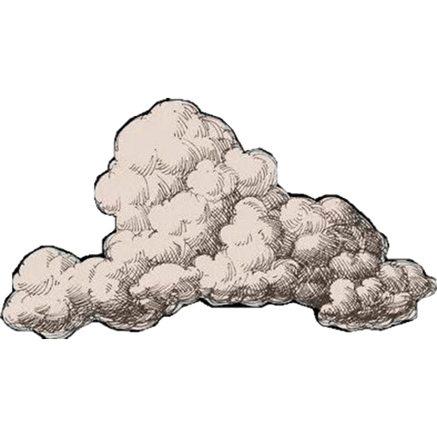
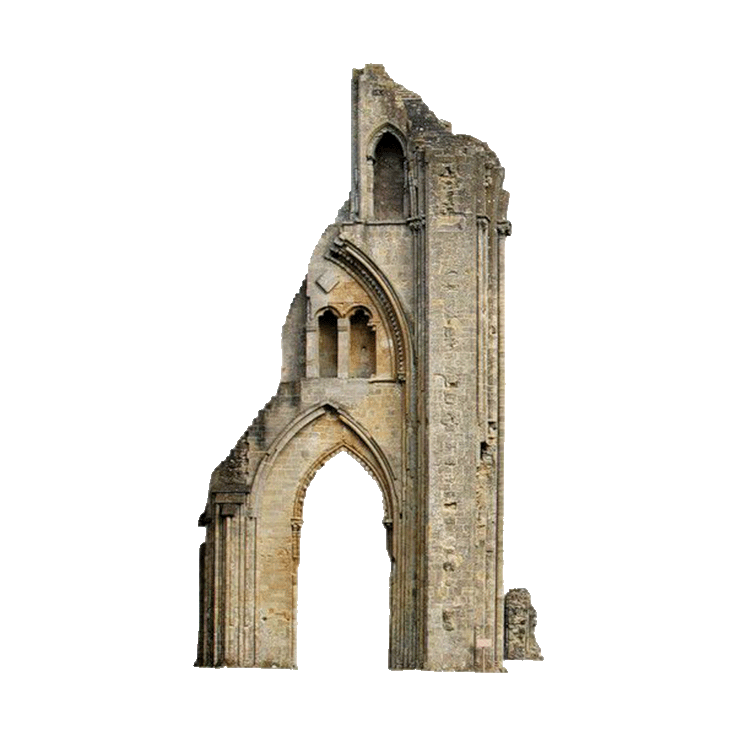
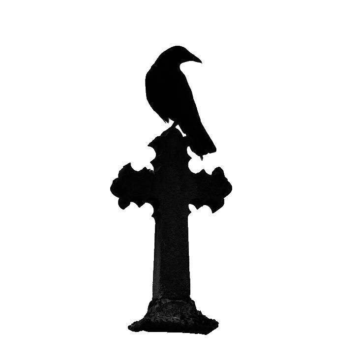
El mito le da un rostro al miedo.
Destripador, hombre lobo, vampira: cada nombre convirtió hechos inciertos en una figura reconocible, repetible y difícil de olvidar.
¿Dónde estánlos asesinosen serie?
No han desaparecido. Pero hoy resulta mucho más difícil cometer varios crímenes sin que una prueba, una cámara o un teléfono permita relacionarlos.
 El entorno observa
El entorno observaincluso cuando nadie mira

El margense ha reducido.
Durante la llamada edad de oro, una misma persona podía actuar en distintas ciudades sin que las investigaciones llegaran a conectarse. Los archivos eran locales, la información circulaba despacio y muchas pruebas no podían analizarse con los medios de la época.
Ese margen se ha reducido. El ADN permite vincular delitos separados por años. Las cámaras reconstruyen recorridos. Los teléfonos registran movimientos, llamadas y conexiones. Las matrículas, los pagos y las búsquedas completan una cronología que antes dependía casi por completo de los testigos.
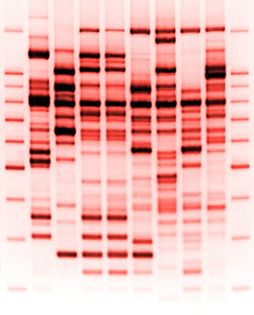
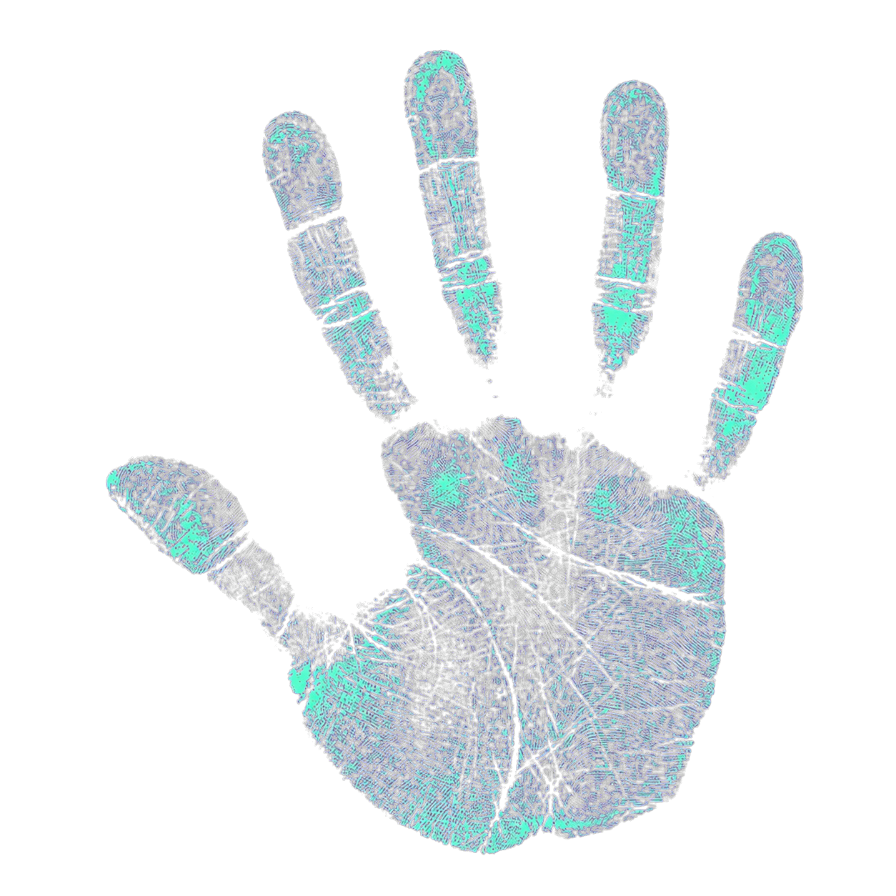
.jpeg)
.jpeg)
Por separado son indicios.Juntos reconstruyenun recorrido.
Las bases de datos permiten comparar huellas, perfiles genéticos, armas y casos abiertos en distintos territorios. Un indicio que antes quedaba aislado puede convertirse ahora en el nexo entre varias investigaciones.
El tiempo, que antes favorecía al autor, puede acabar favoreciendo a la investigación.
.jpeg) Análisis · 000%
Análisis · 000%
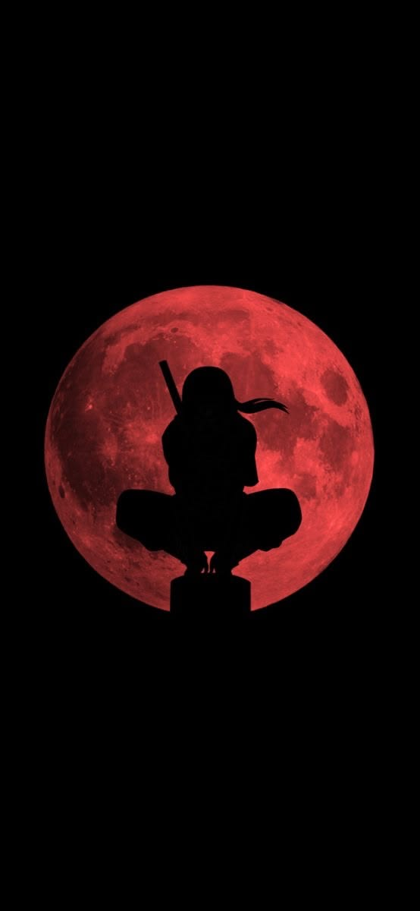
Hoy tendríaque ser casiinvisible
El asesino en serie clásico aprovechaba carreteras, fronteras policiales y archivos que no se comunicaban. El actual tendría que atravesar un entorno lleno de registros sin aparecer en ninguno de ellos.
Cuando el dañodeja de necesitarun cuerpo
No todo depredador busca un sótano. Algunos solo necesitan una pantalla, una base de datos o una comunidad dispuesta a mirar hacia otro lado.
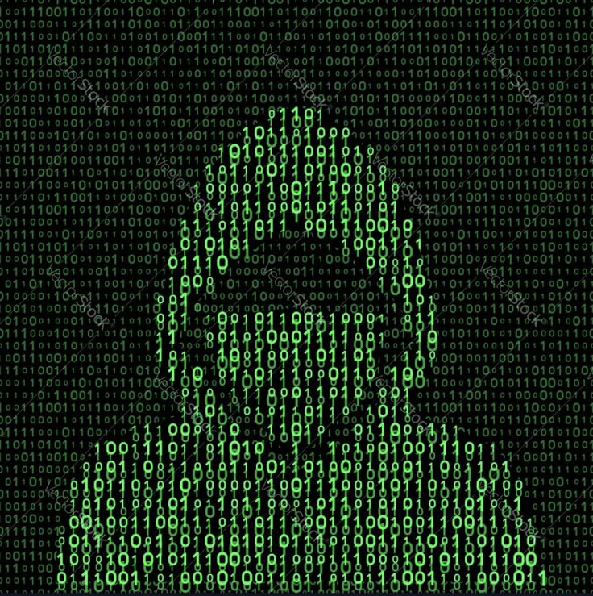
misma capacidad de daño

La pantalla no eliminala violencia.
El true crime nos ha acostumbrado a imaginar al depredador como una presencia física: una persona, un vehículo y una escena del crimen. Sin embargo, buena parte de la violencia contemporánea ya puede ejercerse a distancia.
Vigilar, suplantar, humillar, extorsionar, manipular o explotar la imagen de otra persona no exige compartir espacio con ella. A veces basta con tener acceso a una cuenta, un archivo o una audiencia.
La pantalla la rediseña.
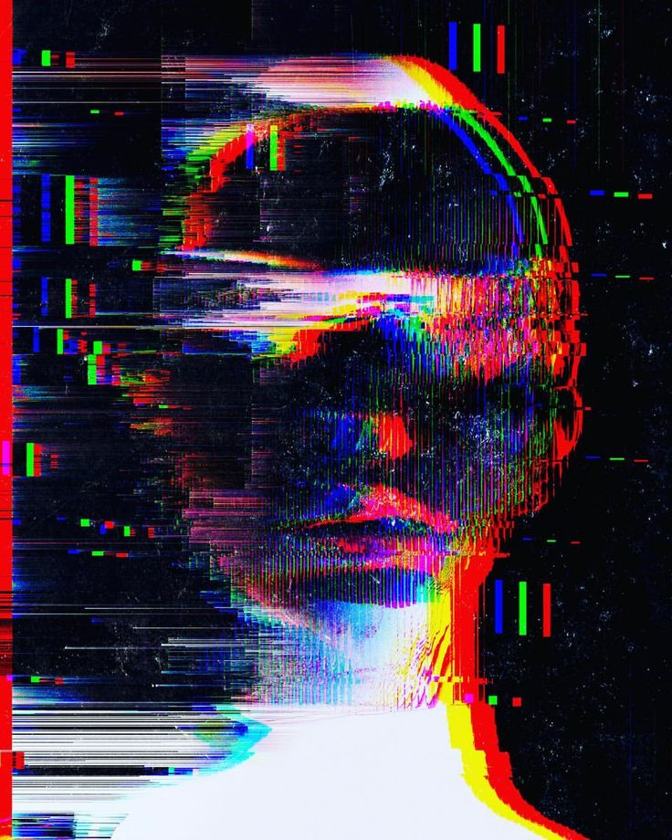
Algunas formas de violenciaya no dejan un lugarque acordonar.
Se producen en conversaciones privadas, plataformas, bases de datos y redes sociales. Una identidad puede ser suplantada. Una imagen puede convertirse en material de extorsión. Una mentira puede repetirse hasta destruir una reputación.
No toda depredación deja sangre.
La crueldadtambién se automatiza
La inteligencia artificial no inventa el delito. Puede hacerlo más barato, más rápido y más fácil de repetir. Una operación que antes exigía tiempo, conocimientos y contacto directo puede prepararse, adaptarse y distribuirse de forma casi automática.

El daño aprendea funcionar comoun sistema.
Las voces clonadas, los vídeos falsos, las identidades sintéticas y los mensajes personalizados permiten engañar a más personas y hacerlo con mayor precisión.
El autor puede actuar desde lejos, dirigirse a cientos de víctimas y repartir el trabajo entre herramientas, plataformas y cuentas distintas. Ya no necesita esconderse en un único lugar porque su actividad tampoco ocupa un único lugar.
Seguimos buscando a un individuo mientras el daño aprende a funcionar como un sistema.
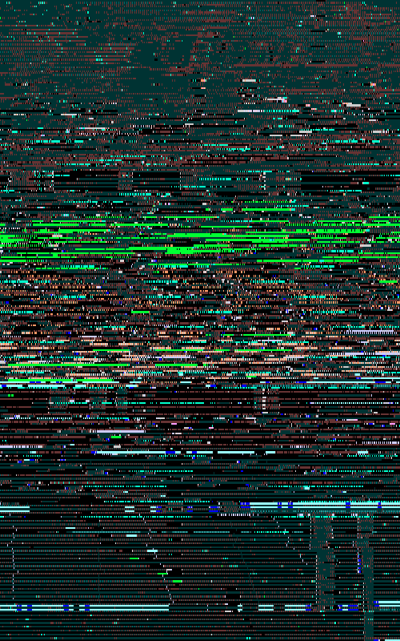
El próximo depredadorquizá no actúe solo
Los delitos del futuro no serán necesariamente nuevos. La extorsión, el fraude, el acoso y la manipulación seguirán existiendo, pero podrán apoyarse en sistemas capaces de observar, decidir y actuar con una intervención humana cada vez menor.
Agentes autónomos, dispositivos conectados, vigilancia automatizada y tecnologías que todavía no conocemos ampliarán de nuevo el alcance del delito. Algunas agresiones se dirigirán contra personas. Otras podrán afectar a servicios, infraestructuras y comunidades enteras.
El reto no será únicamente descubrir quién está detrás.
.jpeg)
Antes le dimos forma de leyenda.Después, de expediente.Ahora quizá tenga forma de interfaz.
La próxima forma del monstruo quizá ya exista. Solo que todavía no sabemos reconocerla.